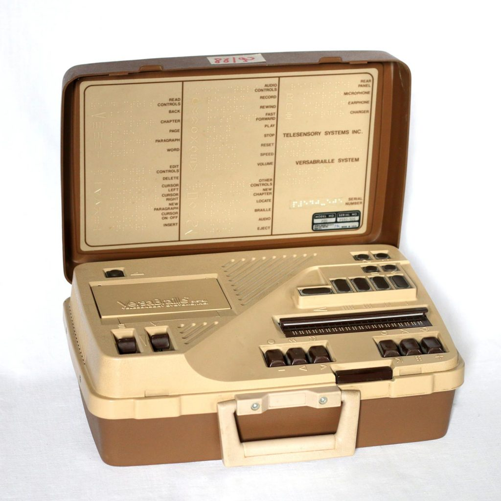

VersaBraille
The first American refreshable Braille display, turning screen text into raised dots under the fingers.

Overview
The VersaBraille was the first American refreshable Braille display, introduced by Telesensory Systems Inc. (TSI) in December 1979. It was a portable, battery-powered device that combined a 20-cell refreshable Braille display, a Braille keyboard, and cassette-tape data storage into a single unit — functioning as a Braille notetaker, a reading machine, and a computer terminal via RS-232 serial interface. The display used piezoelectric bimorph reeds: tiny crystals that bend when voltage is applied, pushing pins up through holes to form Braille dots, and bending the opposite way to retract them. The same fundamental technology, first invented by Oleg and Andrée Tretiakoff in France for their 1976 Digicassette, still powers most Braille displays today.
TSI was founded in 1970 by Stanford electrical engineering professor John Linvill and Stanford Research Institute researcher James C. Bliss. Their first product, the Optacon (1970), was a tactile imaging device that converted printed text into a vibrating pin array — but it reproduced letter shapes, not Braille. The VersaBraille was TSI's second major product and the first to give blind computer users direct, dynamic Braille access to electronic text. Weighing roughly 4 lbs and costing several thousand dollars, it became many blind people's first introduction to computing concepts in the United States.
Deep dive
The piezoelectric Braille cell was invented by Oleg Tretiakoff, a Russian-born French inventor, working with his wife Andrée Tretiakoff in Paris. Their company ELINFA introduced the Digicassette in 1976 — the world's first commercially available paperless Braille machine. It used bimorphous piezoelectric reeds to raise and lower Braille dots, stored data on standard C-90 cassette tapes (300,000 Braille characters per tape — equivalent to a 220-page paperback), and supported RS-232 serial connection for computer terminal use. TSI co-founder Jim Bliss recounts in his AFB oral history that TSI was deeply impressed by the Digicassette. They brought Tretiakoff to California and tried to negotiate a distribution and manufacturing agreement. When the deal fell through, TSI launched its own research and development project to build an American version — which became the VersaBraille. The piezoelectric reed technology was very similar to what TSI had already developed for the Optacon's tactile array, giving them deep in-house expertise. The VersaBraille is thus a direct descendant of the Digicassette, adapted and refined by one of Silicon Valley's earliest assistive-technology companies.
The VersaBraille was a genuinely multi-modal device. In Notetaker mode, users entered text via the Braille keyboard (6 Braille dots + spacebar, electronic and sensitive to light touch) and stored it on cassette. In Reading Machine mode, they could read pre-recorded Braille documents on the 20-cell display. In Computer Terminal mode, the RS-232 serial port connected to desktop computers, modems, teletypewriters, and printers, allowing blind users to read screen output in Braille. The reading interaction was carefully designed. An advance bar along the top edge of the Braille line moved forward through text; a back-up key moved backward. Four navigation keys — Chapter, Page, Paragraph, and Word — were arranged by unit size (largest to smallest) for intuitive document traversal. A word search function could instantaneously scan an entire Braille page for any character string. A place indicator key reported the current chapter name, page number, and exact character position. Editing capabilities included deleting and inserting at the character, word, paragraph, page, and chapter levels, all through chorded key combinations.
The core transducer that makes refreshable Braille possible. Each Braille cell contains 8 piezoelectric bimorph reeds (one per dot position). A piezoelectric crystal bends physically when voltage is applied — in one polarity, the reed curves upward, pushing a pin through a hole in the display surface to create a raised dot. Reverse the voltage, and the reed curves downward, retracting the pin. This electromechanical action happens silently and quickly enough for real-time reading. The VersaBraille's 20-cell display meant 160 individually addressable dots. Each cell could display any 8-dot Braille pattern. The 8-dot format (rather than traditional 6-dot Braille) allowed the bottom two dots to encode additional information like cursor position, capitalization, and formatting — making it suitable as a computer terminal where visual formatting cues needed tactile equivalents. The same piezoelectric principle, refined over decades, still dominates the Braille display market. Modern devices like the Orbit Reader and HumanWare BrailleNote use the same fundamental transducer mechanism — a rare case in HCI where a 1970s invention remains essentially unchanged.
Telesensory Systems represented an unusual fusion of Stanford engineering, Silicon Valley entrepreneurship, and disability rights. John Linvill, the company's co-founder, had a blind daughter — his motivation was deeply personal. Jim Bliss brought expertise in tactile perception from Stanford Research Institute. The company employed top Silicon Valley talent (Stanford PhDs and MBAs), had Canon as an investor and distributor, and operated with the ambition of a tech startup — but its mission was accessibility. The Optacon had already established TSI's credibility. For the first time, blind people could read any printed document independently — not just Braille books, but mail, newspapers, labels, and handwritten notes. The VersaBraille extended this independence into the digital realm. TSI went bankrupt in March 2005 (Chapter 7), but its legacy shaped five decades of assistive technology.
Several original VersaBraille units survive in museum collections. The American Printing House for the Blind (APH) Museum in Louisville, Kentucky holds multiple units including the VersaBraille system (accession 1995.1) and a VersaBraille II+. The Múzeum špeciálneho školstva in Levoča, Slovakia holds a VersaBraille P2D (1979 model). The Deutsches Museum in Munich exhibits the BRAILLEX prototype — the parallel German development by F.H. Papenmeier GmbH (1975, piezoelectric version by 1979), which received the Louis Braille Prize. Refreshable Braille remains one of computing's most profound assistive technologies. For blind programmers, writers, students, and knowledge workers, the ability to read screen output in real time through touch was — and remains — transformative. The VersaBraille was the device that first made this possible at personal-computer scale.
Team & pioneers
- Oleg and Andrée Tretiakoff. French inventors who patented the piezoelectric Braille cell (1975) and created the Digicassette (1976), the world's first paperless Braille machine.
- Dr. John G. Linvill. Stanford electrical engineering professor. Co-founded TSI in 1970. Father of a blind daughter — his motivation was deeply personal.
- Dr. James C. Bliss. Stanford Research Institute researcher specializing in tactile perception. Co-founded TSI with Linvill. Led the VersaBraille development after the Tretiakoff deal fell through.
- Telesensory Systems Inc. (TSI). Mountain View, CA company founded 1970. Created the Optacon (1970) and VersaBraille (1979). Employed top Silicon Valley talent. Filed Chapter 7 bankruptcy in 2005.
Media

Sources
- APH Blog — Blindness History Basics: Refreshable Braille Display
- AFB Oral History — Jim Bliss (TSI co-founder), Part 2
- APH Museum — VersaBraille System (Object 1995.1)
- Duxbury Systems — VersaBraille Owner's Manual, Volume 1
- Papenmeier Rehatechnik — History Page
- US Patent 4,305,067 — Tretiakoff piezoelectric Braille cell
- Wikipedia — Telesensory Systems
- Wikipedia — Refreshable Braille Display